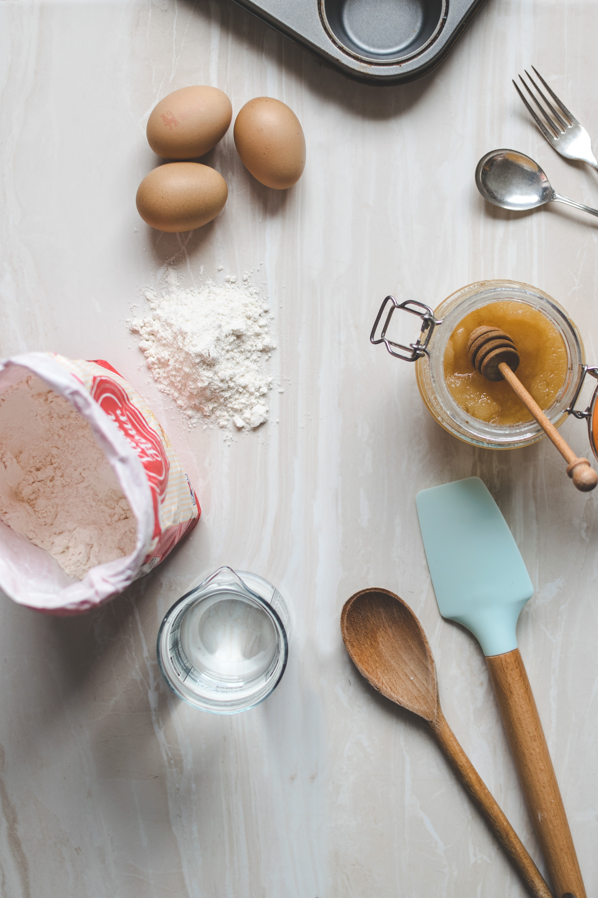

Baking
Macarons
Cakes
Meringue cookies
Baking
Baking
is a method of preparing food that uses dry heat, typically in an oven.
The most common baked item is
bread
but many other types of foods are baked. 